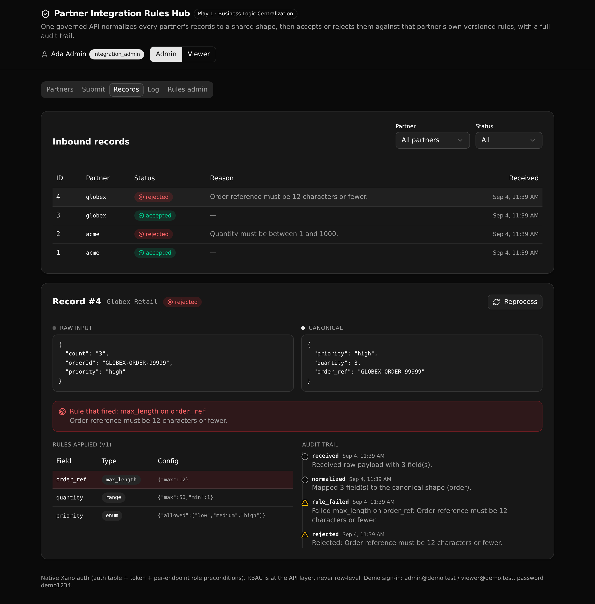

Every partner's field mappings and validation rules in one governed API. Inbound records are normalized to a shared shape, then accepted or rejected against that partner's own versioned rules, with an audit trail of every decision.

Two partners send different field names and both normalize to the same canonical shape. Mappings and rules are data read from tables, not code branches.
A partner's rule set carries a version. Add a rule, then reprocess a record to apply the current version and watch the outcome change.
Two roles. Write endpoints re-read the caller's role from the database and refuse a viewer with a 403. The gate is the API, not the UI.
Every decision writes one log row per step, so a reviewer can read exactly why a record was accepted or rejected.
All endpoints sit under the hub group, so the public path is /api:hub/<name>.
| Method | Path | Access | What it enforces |
|---|---|---|---|
| POST | /auth/login | public | Verify password against the internal hash, mint a token |
| GET | /auth/me | signed-in | The current caller |
| GET | /partners | signed-in | Partners plus mappings and active rules |
| POST | /ingest | signed-in | The one governed job: normalize, validate, decide |
| GET | /records | signed-in | List and filter records by partner and status |
| GET | /record/{id} | signed-in | One decision with everything that explains it |
| GET | /log | signed-in | The processing log (the audit trail) |
| GET | /config/{partner_id} | signed-in | A partner's mappings and rule history |
| POST | /mappings | admin | Create or update a field mapping |
| POST | /rules | admin | Add a validation rule to a partner's set |
| POST | /reprocess/{record_id} | admin | Re-decide a record against the current rules |
| GET | /seed | public | Deterministic demo seed (idempotent) |
Paste this to a coding agent to clone the template and get it live on your own Xano account:
Clone the Xano template at https://github.com/xano-scratch/partner-integration-rules-hub and get it running on my own Xano account. 1. git clone https://github.com/xano-scratch/partner-integration-rules-hub.git 2. cd partner-integration-rules-hub && npm install 3. npx xanots login (one-time browser auth) 4. npm run xano:deploy (deploys the backend and frontend, prints the live URL) Then open the printed URL, sign in as admin@demo.test / demo1234, and help me adapt the partners, field mappings, and validation rules to my own integration domain.
Or by hand: git clone the repo, npm install, npx xanots login, then
npm run xano:deploy. The app seeds two demo partners and signs you in as the admin.
npm run xano:deploy for your own live copy with fresh
links. This is an experimental proof artifact, not a production customer reference.